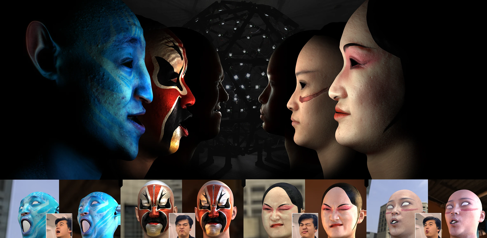

Video-Driven Neural Physically-Based Facial Asset for Production
Research overview
This work learns production-oriented facial assets from video, combining dynamic geometry with physically based textures. Separate generative models represent expression, geometry, and appearance while shared mappings keep them coordinated. Fine wrinkle detail supports animated materials, and the resulting assets enable performer capture, motion transfer across identities, and explicit editing within established rendering workflows.
Summary · Read original ↗01 / 01
